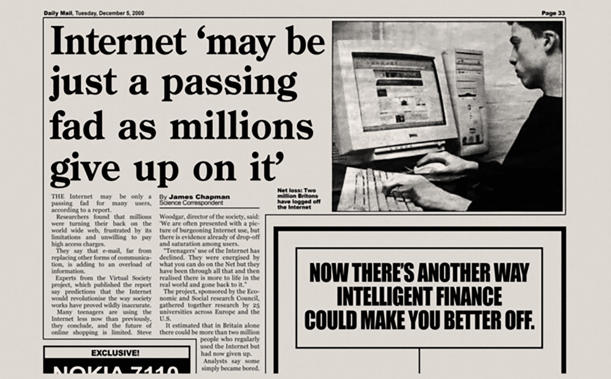

About Me
I first learned of Bitcoin in 2015 and quickly became obsessed with it. Nothing since the Internet has had more potential to fundamentally disrupt human civilization. As a millennial born in 1988, I didn't get to help build the Internet. Crypto represented my once-in-a-lifetime opportunity to make a real impact.
I have a systems engineering degree but I am not an engineer by trade. In the web3 space, I work with early stage startups on strategy, business development, partnerships and operations. My technical background designing and implementing technology systems combined with my business development skills is my superpower.
Contact Me
Downloads
Charity
Please learn more about how you can help provide traumatized youth a safe environment for healing through our foundation, Mustard Seed Ranch.